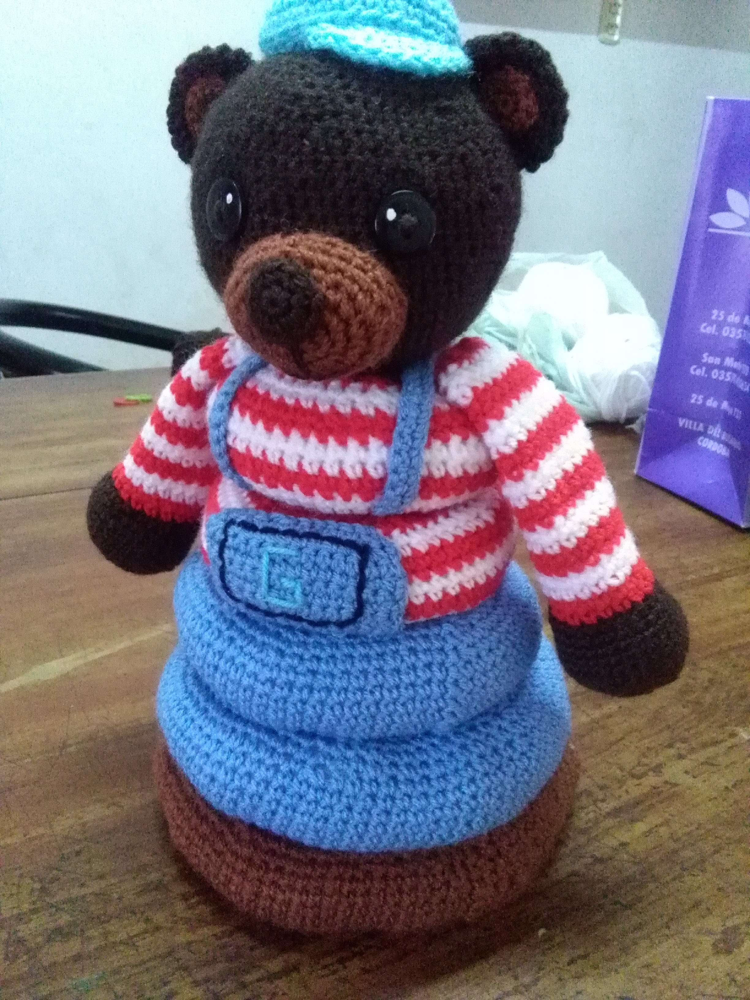
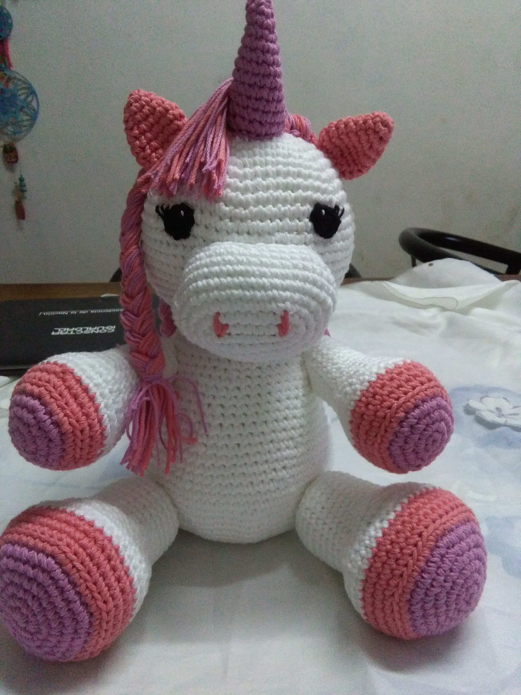
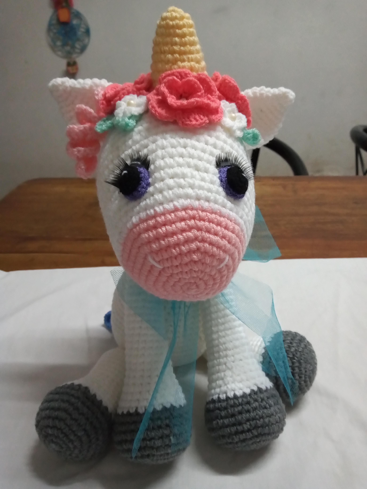
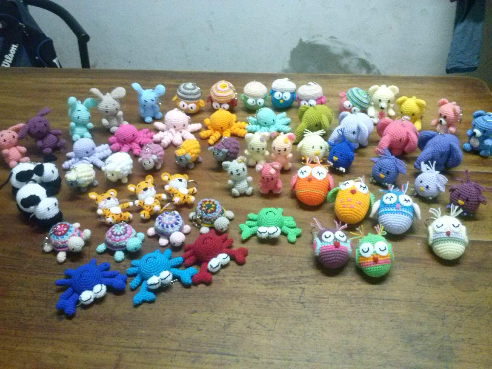
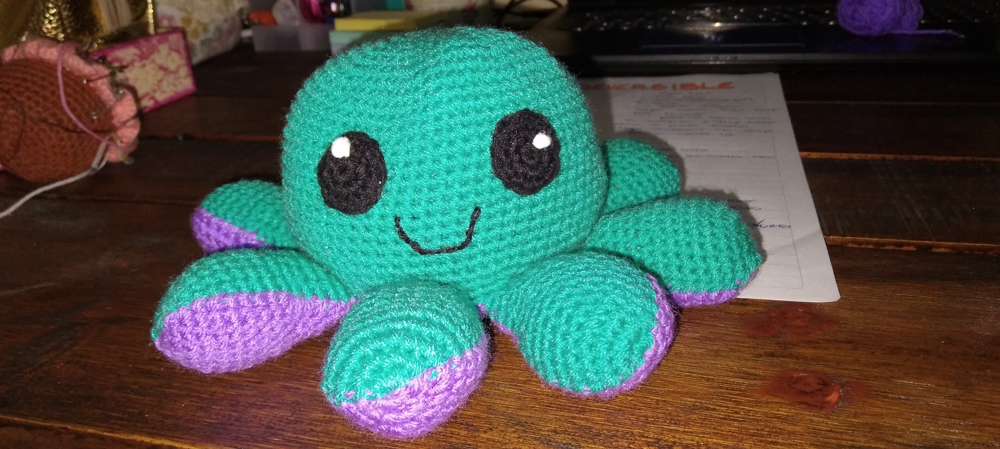
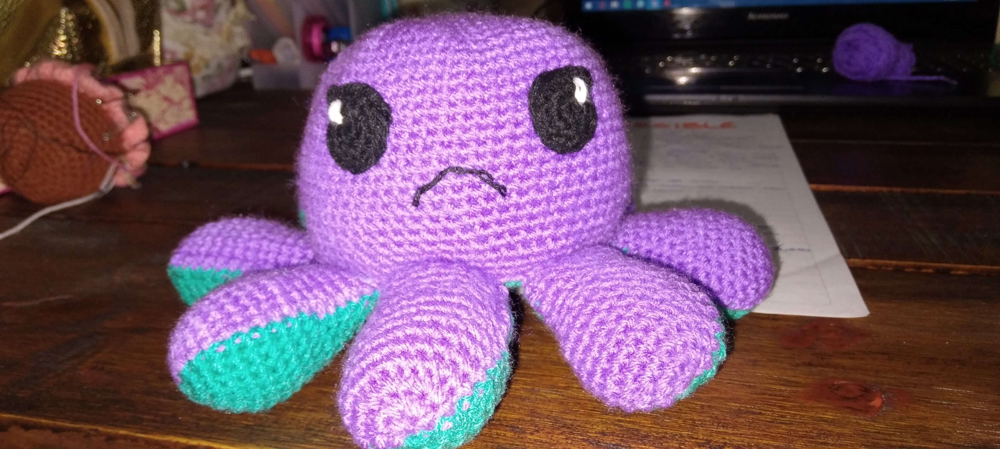
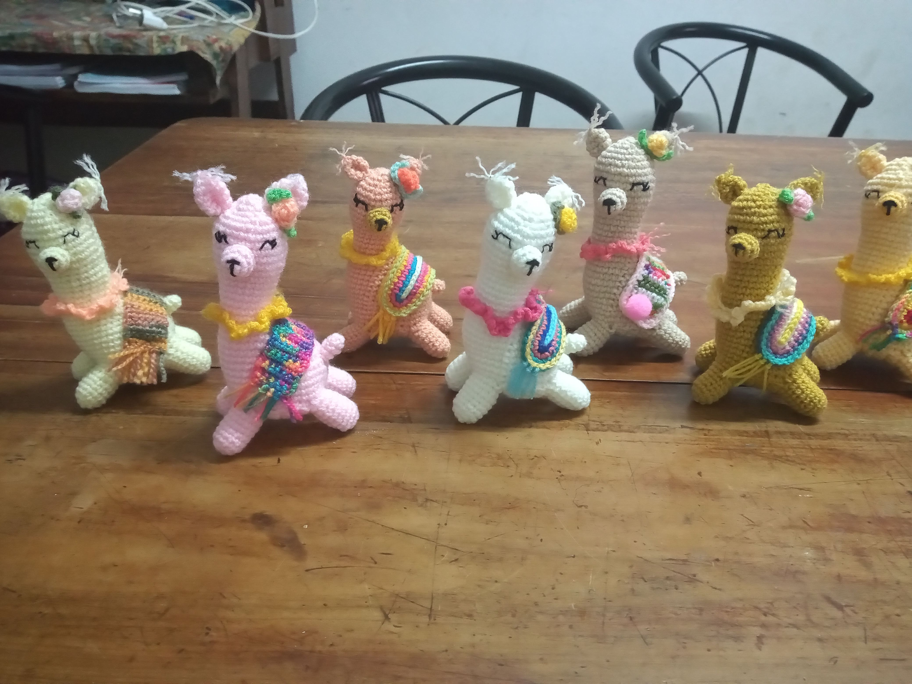
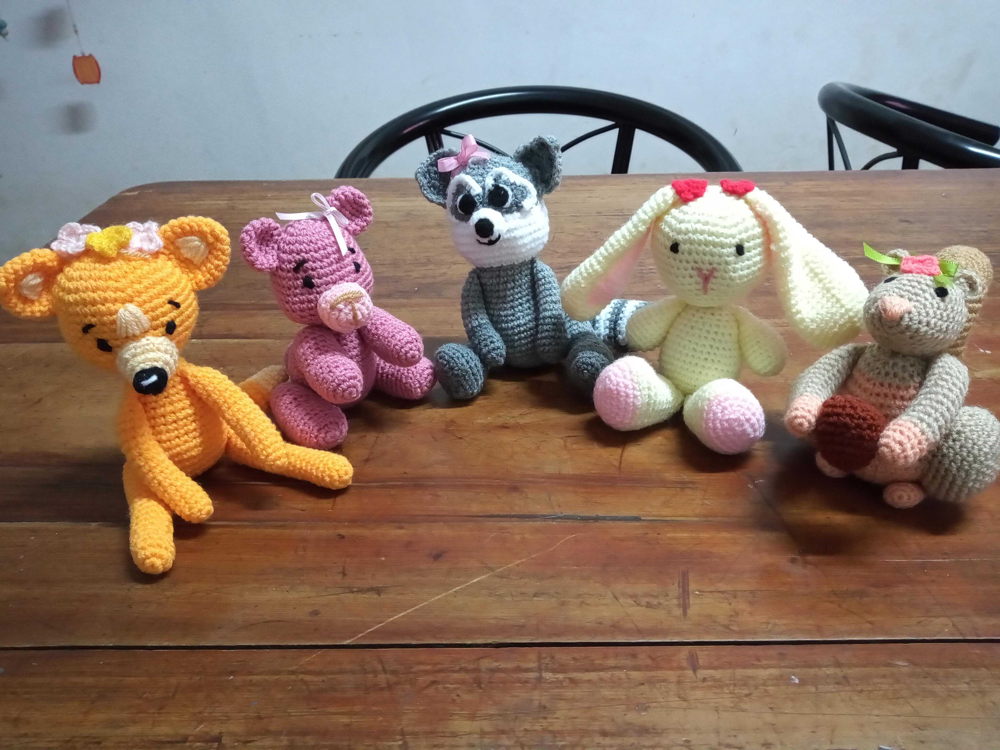

-

Oso encastrable
Es un juguete encantador que combina la suavidad de un peluche con la diversión de encastrarlo. Con sus piezas tejidas a mano, invita a los niños a aprender y jugar mientras ensamblan este adorable amigo.
-

Unicornio
Un unicornio tejido al crochet es un mágico y tierno compañero de peluche que hará que los corazones de niños y adultos se iluminen. Con su colorido y detallado diseño tejido a mano, este unicornio es la perfecta combinación entre lo lúdico y lo artesanal. Un regalo que despierta sonrisas y fantasía.
-

Unicornio
Este adorable unicornio tejido al crochet es más encantador gracias a su vincha de flores. Sus colores suaves y la delicada elaboración a mano hacen que este unicornio sea una verdadera obra de arte. Sus flores aportan un toque de color y elegancia, convirtiéndolo en el compañero perfecto para quienes buscan un toque de magia y belleza en sus vidas.
-

Animales Varios
Los animales tejidos al crochet diseñados para llaveros son encantadoras miniaturas que capturan la esencia de la fauna en un formato compacto y decorativo. Cada animal es tejido con hilos de colores que imitan la apariencia real de la especie, lo que los hace fácilmente reconocibles. Estos llaveros de animales tejidos son una forma maravillosa de expresar tu amor por la naturaleza y la creatividad en tu vida cotidiana, además de ser funcionales al mantener tus llaves organizadas y fácilmente identificables.
-

Pulpo reversible
El pulso reversible feliz es una pieza de diseño única y expresiva. Elaborado con hilos de colores brillantes y oscuros. Tiene una carita feliz con ojos brillantes y sonriente. El tejido reversible permite al usuario mostrar su estado de ánimo o personalidad, alternando entre las dos emociones según el día o la ocasión. Es una forma creativa y divertida de expresar sentimientos a travé de la moda.
-

Pulpo reversible
Un pulso reversible triste es una pieza de diseño única y expresiva. Elaborado con hilos de colores brillantes y oscuros. Tiene una carita triste con cejas fruncidas y una boca hacia abajo. El tejido reversible permite al usuario mostrar su estado de ánimo o personalidad, alternando entre las dos emociones según el día o la ocasión. Es una forma creativa y divertida de expresar sentimientos a través de la moda.
-

Llamitas
Las llamitas tejidas al crochet son creaciones adorables. Están confeccionadas con hilos de lana suave en colores como blanco, marrón o beige para capturar la apariencia lanuda de una llama real. Estas llamitas tejidas son peluches encantadores y populares en la comunidad de tejido al crochet, ideales para decorar habitaciones infantiles o para regalar a cualquier amante de los animales adorables.
-

Animales varios
Descripción del Producto 8.